壁バリバリに嗤ふ丑三つ時 [梅吉]
寝室のウォークインクローゼットの入口の壁。
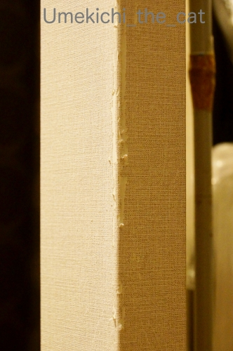
気がつけばこんなことになってましたw
反対側の壁もこんな感じです。
壁紙がビリビリ剥がれてくるというより
ボロボロになって取れてくるので梅吉の口に入っても困ります。
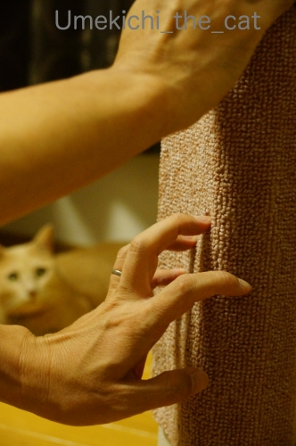
この部分に梅吉がご満悦で乗っていたマットを長めの針の画びょうで取り付けました。
画びょうの強度で？かもですが取り付けてからほぼ一週間。
梅吉が全力で爪とぎしても取れていません。
こうやって使うんだよ、とおとーさんの実演を・・・
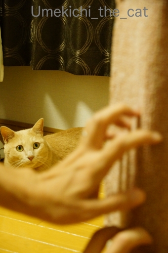
真剣に
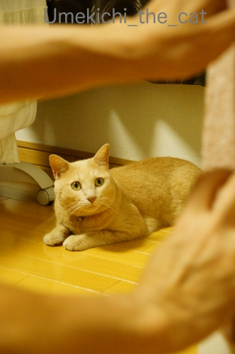
いぶかしげに見つめる梅吉さん(*>艸<)
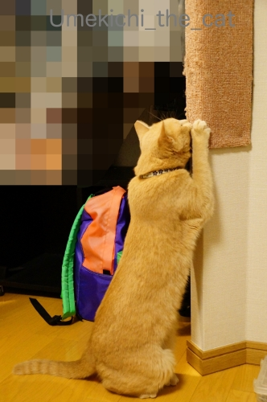
反対側のマットの前に腰を据えましたよ。
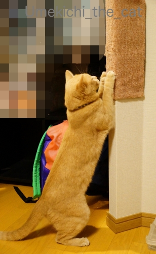
これは！！
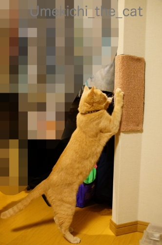
やったー！！上手に爪とぎしてくれました＾＾
人間の思惑など全然気にしてくれない猫様ですがこれは上手く行ったようです。
夜中に「バリバリバリバリ〜っ！！！！！」と爪とぎの音が聞こえて目が覚めちゃうのですが
ああ、使ってもらえているなと含み笑いをするこの頃です＾＾
〜どうでも良い情報〜
梅吉の向こうに見えているド派手なリュックは
90年代、LAスタイル（？）にかぶれていた私が使っていたものです。
リーボックのハイカットのエアロビシューズにくしゅくしゅソックス（ルーソーではない）
なんて格好をしてた時代。
ボディコンシャス系（私は着てないよ）から渋カジ全勢になる谷間の時代？だったかしらね・・・
今は非常用の持ち出し袋になってます。
以上、どうでも情報でしたwww
 ↑ガブッと一押し↑
↑ガブッと一押し↑
先週末は達郎さんのライブでした。ファン歴は小学生の時から。
洋楽ばっかりであまり聞いてない時代もありましたが・・・
最近「耳に馴染んだ音楽が一番心地よい」という中高年あるある(⌒-⌒;
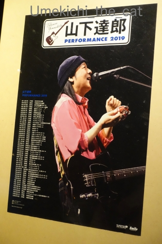
入手困難な達郎さんのライブチケットですが手に入る限りは必ず行ってます。
ブログの記事にしたのは初めてなか。
備忘録としてブログが一番ですからねー。書いておきますよ＾＾
音楽の好みは本当に人それぞれなので達郎さんの話題はスルーで大丈夫です。
で今回何を言いたかったかというと・・・
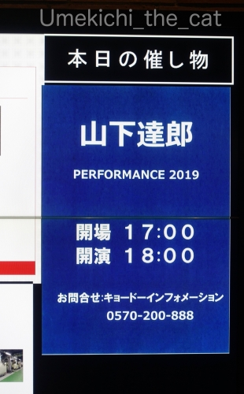
このくらいの時間から始まるライブあるいは舞台鑑賞、映画鑑賞の時って
食事問題が悩ましいのです。
この日のライブスタートは18時でした。
夕食をライブ前に食べるとすると16時くらいから？になります。
達郎さんのライブは長尺で３時間たっぷりあるので
終わってから食べるとなると10時ごろから食事をすることに。
この日はライブ前に食事をしました。
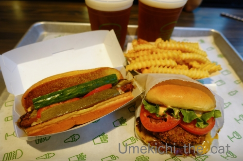
ランチどきには激混みですが16時くらいなら空いているかな？と向かったのが「Shake Shack」。
初めて行きましたがパテも巨大マッシュルームのフライ（サンドしてあります）も美味しかった！！
夕方に食べているのだから帰ってお風呂に入ってそのまま寝れば良いのですが
良いライブを見た後ってお酒を飲みたくなるんですよねー。
そうするとつまみも欲しくなり結局何か口に入れる・・・
なかなか悩ましいライブ日の飲食事情でした。。。
備忘録なのでセットリストも書いておきます。
山下達郎 PERFORMANCE 2019
1.SPARKLE
2.あまく危険な香り
3.ドーナツ・ソング
4.土曜日の恋人
5.Paper Doll
6.FUTARI
7.サウスバウンドNo.9
8.君は天然色 [大瀧詠一]
9.REBORN
10.セールスマンズ・ロンリネス
11.La Vie En Rose
12.Bella Notte
13.Have Youreself A Merry Little Christmas [Judy Garland]
14.クリスマス・イブ
15.メドレー
蒼氓
People Get Ready [Curtis Mayfield]
Blowin’ In The Wind [Bob Dylan]
希望という名の光
蒼氓
16.Get Back In Love
17.BOMBER
18.メドレー
LET’S DANCE BABY ←クラッカー初デビュー！
不思議なピーチパイ [竹内まりや]
もう一度 [竹内まりや]
けんかをやめて [竹内まりや]
リンダ [竹内まりや]
純愛ラプソディ [竹内まりや]
毎日がスペシャル [竹内まりや]
すてきなホリデイ [竹内まりや]
元気を出して [竹内まりや]
LET’S DANCE BABY
19.ハイティーン・ブギ
20.メドレー
アトムの子
アンパンマンのマーチ [ドリーミング]
アトムの子
アンコール
21.プラスティック・ラブ
22.硝子の少年（ワンコーラス）
23.Ride On Time
24.Down Town
25.YOUR EYES
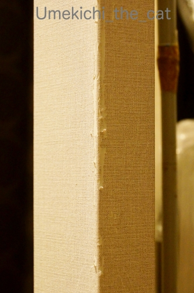
気がつけばこんなことになってましたw
反対側の壁もこんな感じです。
壁紙がビリビリ剥がれてくるというより
ボロボロになって取れてくるので梅吉の口に入っても困ります。
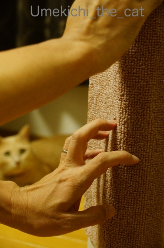
この部分に梅吉がご満悦で乗っていたマットを長めの針の画びょうで取り付けました。
画びょうの強度で？かもですが取り付けてからほぼ一週間。
梅吉が全力で爪とぎしても取れていません。
こうやって使うんだよ、とおとーさんの実演を・・・
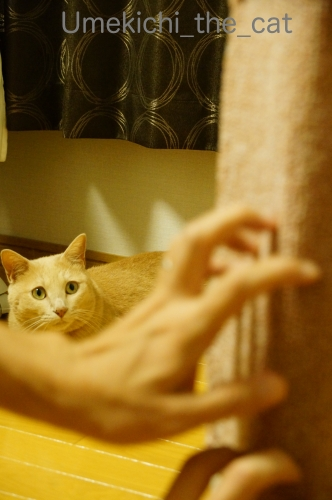
真剣に
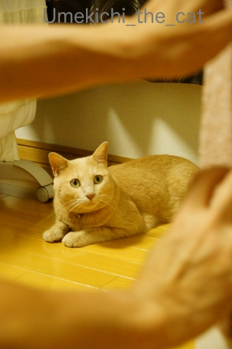
いぶかしげに見つめる梅吉さん(*>艸<)
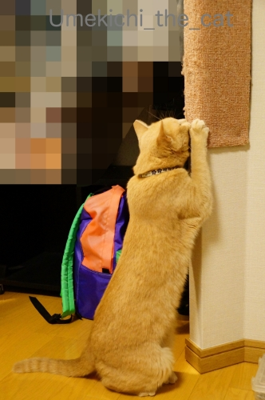
反対側のマットの前に腰を据えましたよ。
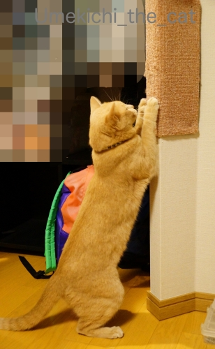
これは！！
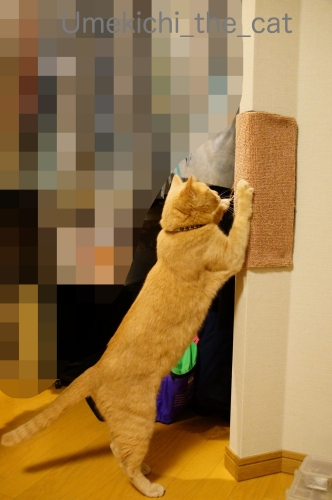
やったー！！上手に爪とぎしてくれました＾＾
人間の思惑など全然気にしてくれない猫様ですがこれは上手く行ったようです。
夜中に「バリバリバリバリ〜っ！！！！！」と爪とぎの音が聞こえて目が覚めちゃうのですが
ああ、使ってもらえているなと含み笑いをするこの頃です＾＾
〜どうでも良い情報〜
梅吉の向こうに見えているド派手なリュックは
90年代、LAスタイル（？）にかぶれていた私が使っていたものです。
リーボックのハイカットのエアロビシューズにくしゅくしゅソックス（ルーソーではない）
なんて格好をしてた時代。
ボディコンシャス系（私は着てないよ）から渋カジ全勢になる谷間の時代？だったかしらね・・・
今は非常用の持ち出し袋になってます。
以上、どうでも情報でしたwww
先週末は達郎さんのライブでした。ファン歴は小学生の時から。
洋楽ばっかりであまり聞いてない時代もありましたが・・・
最近「耳に馴染んだ音楽が一番心地よい」という中高年あるある(⌒-⌒;
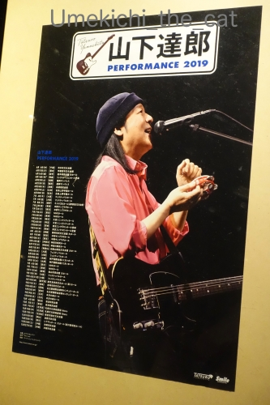
入手困難な達郎さんのライブチケットですが手に入る限りは必ず行ってます。
ブログの記事にしたのは初めてなか。
備忘録としてブログが一番ですからねー。書いておきますよ＾＾
音楽の好みは本当に人それぞれなので達郎さんの話題はスルーで大丈夫です。
で今回何を言いたかったかというと・・・
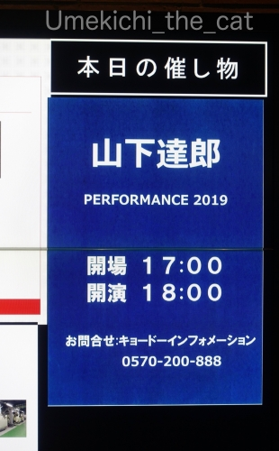
このくらいの時間から始まるライブあるいは舞台鑑賞、映画鑑賞の時って
食事問題が悩ましいのです。
この日のライブスタートは18時でした。
夕食をライブ前に食べるとすると16時くらいから？になります。
達郎さんのライブは長尺で３時間たっぷりあるので
終わってから食べるとなると10時ごろから食事をすることに。
この日はライブ前に食事をしました。
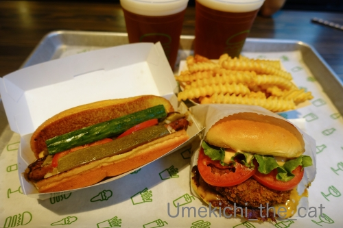
ランチどきには激混みですが16時くらいなら空いているかな？と向かったのが「Shake Shack」。
初めて行きましたがパテも巨大マッシュルームのフライ（サンドしてあります）も美味しかった！！
夕方に食べているのだから帰ってお風呂に入ってそのまま寝れば良いのですが
良いライブを見た後ってお酒を飲みたくなるんですよねー。
そうするとつまみも欲しくなり結局何か口に入れる・・・
なかなか悩ましいライブ日の飲食事情でした。。。
備忘録なのでセットリストも書いておきます。
山下達郎 PERFORMANCE 2019
1.SPARKLE
2.あまく危険な香り
3.ドーナツ・ソング
4.土曜日の恋人
5.Paper Doll
6.FUTARI
7.サウスバウンドNo.9
8.君は天然色 [大瀧詠一]
9.REBORN
10.セールスマンズ・ロンリネス
11.La Vie En Rose
12.Bella Notte
13.Have Youreself A Merry Little Christmas [Judy Garland]
14.クリスマス・イブ
15.メドレー
蒼氓
People Get Ready [Curtis Mayfield]
Blowin’ In The Wind [Bob Dylan]
希望という名の光
蒼氓
16.Get Back In Love
17.BOMBER
18.メドレー
LET’S DANCE BABY ←クラッカー初デビュー！
不思議なピーチパイ [竹内まりや]
もう一度 [竹内まりや]
けんかをやめて [竹内まりや]
リンダ [竹内まりや]
純愛ラプソディ [竹内まりや]
毎日がスペシャル [竹内まりや]
すてきなホリデイ [竹内まりや]
元気を出して [竹内まりや]
LET’S DANCE BABY
19.ハイティーン・ブギ
20.メドレー
アトムの子
アンパンマンのマーチ [ドリーミング]
アトムの子
アンコール
21.プラスティック・ラブ
22.硝子の少年（ワンコーラス）
23.Ride On Time
24.Down Town
25.YOUR EYES

カフェオレ色の梅吉

梅吉 2023年8月10日 永眠


梅吉と出会った譲渡会

犬猫の理由なき殺処分ゼロ
妄想広告
UMEKICHI 光

爆発的に早い！
時々攻撃的！
Thanks to Mr.Boss365
爆発的に早い！
時々攻撃的！
Thanks to Mr.Boss365

おとーさんの実演を真剣な眼差しで見る梅吉さんかわいい～♪
これで壁紙もひと安心ですね。
「Shake Shack」は行ってみたいと思いながらなかなか実現せず・・・
by yamatonosuke (2019-09-23 01:07)
猫の親はなんでも自分がやって見せて教えるので、おとーさんの教育法は正しいのです。梅吉さんの真面目な生徒ぶりもなかなかよろしいですね。
by zombiekong (2019-09-23 01:44)
ニャンは見て覚えますからねぇ。
実演が効いたのでは？＾＾
by ぽちの輔 (2019-09-23 05:31)
梅吉さん、爪研ぎ場所をしっかりと覚えて賢い猫さんですね。うちの猫は爪研ぎ場所の他にいろいろとやらかしてくれました(^_^;)
山下達郎は毎年秋田に来ていたのですが、数年前に急にクラッカー禁止となったのを機に来なくなっちゃいました。これは地元紙にも、クラッカー禁止にした県民会館館長の批判記事が出た程でした。残念な出来事です・・・。
山下達郎はシュガーベイブからの大ファンで、自分の結婚式にはYOUR EYESを使ったような(^_^;)
by kou (2019-09-23 07:56)
腰を据えてのバリバリ♪
見事です(#^.^#)
使ってくれると嬉しくなりますね！
やはり皆さんが言うように
実演が効きましたね！
by きぃ (2019-09-23 08:52)
梅吉さんお手本をじっくり見ていますね！
そして一生懸命に爪研ぎですね(^^)
山下達郎は盛り上がったようですね。
by ma2ma2 (2019-09-23 09:25)
賢い梅吉さんだから、お父さんが実演してくれて
すぐに覚えたんですねぇ( ^ω^ )
こうやって使ってくれると下僕冥利につきますよねぇ=(^.^)=
鮮やかなリュック、人混みでも目印になって良いですね♪( ´▽｀)
by ニッキー (2019-09-23 10:36)
梅吉くん、お父さんのやってる様子を見て
使い方をマスターしたのね！！(笑)
こういうこと、うみはダメなのですが、あおは教えると「じーっ」っと観察して真似してくれるんです。梅吉くんもそのタイプかしら^^
LAスタイルをしていた時代があったのですねー！
なんか不思議^m^
そのときの写真が見たくなりますよｗｗ
その頃・・・わたしはロングで、根元からぐるぐるパーマかけていたなあｗｗ
そんでめっちゃタイトなミニスカート履いていたわ。今じゃ恐ろしくて履けない^^;
by リュカ (2019-09-23 10:37)
梅吉さんの真剣なまなざしにきゅんとしました♡
確かにコンサートに行くと夕食のタイミング、悩ましいですよね。
途中、おなか空いちゃうと気になっちゃうし。
私はこないだパンを食べてライブを見てそのあと遅い食事…
あ、食べ過ぎでした…σ(^◇^;)
by liang (2019-09-23 10:43)
梅吉さん、ものすごい眼でおとーさんを見てますね(#^^#)
負けてなるものか～っという気合を感じます！
しっかり真似して賢いにゃ♪
作戦大成功、きっとおとーさんの爪とぎが抜群にうまいのだと思います！！^^
達郎さんのライブ、盛り上がったようで何よりです。
タイトル見ただけでメロディが浮かびますね！
まりやさんの曲は全部歌えそう♪
クラッカーをパンパンやっちゃうんですか？それは楽しそう♪
昔は紙テープ投げたりしてましたが、掃除が大変ということでどんどんできなくなりましたもんね^^;
Shake Shackはkikiさんのとこで記事を見て以来ず～っと気になっていますが並ぶの嫌いな我が家が行くのはまだまだ先になりそうです。
映画やライブの前にサッ食べるには阪神百貨店のスナックパークをよく利用していました^^
by ゆきち (2019-09-23 12:09)
くしゅくしゅソックス！
懐かしいですね～～～。
元祖スパッツ（古っ、笑）が流行った頃かな？
今は、レギンス・・ですかね。
by angie17 (2019-09-23 12:57)
こんにちは。
爪研ぎは仕方がないですが、落ちたゴミは常々危険と感じています。
ちぃさん指導！！ナイスです。人間用でも可能かも？です。
梅吉くん、いい感じで爪研ぎ！！夜中の爪研ぎ音は嬉しい雑音ですね。
山下達郎さん、いい歌声ですね。日本のクリストファー・クロス？FMで仕入れた情報ですが、ロスの音楽専門家に人気あり、J-POPの代表格で評価が高いと言っていました。「Shake Shack」美味しいですね。小生都内ですが、東京フォーラムでコンサート時は、敷地内にある「Shake Shack」でハンバーガー食べてからコンサートです。いきなり「SPARKLE」は盛り上がりますね（笑）リードが良い感じですが、リズム・ベース音がたまらない感じです。アンコールラスト「YOUR EYES」いい選曲。「アイラビュー」で帰り支度かな！？(=^･ｪ･^=)
by Boss365 (2019-09-23 13:04)
梅吉さんの爪とぎはスタンディングスタイルなんですねー。
腰が入った良い姿勢です！(笑)
おとーさんのお手本がまたいいですねぇ。
おぉー！達郎さん、行かれましたか。
小田和正さんもそうですが、あの年であの声をキープしているのはすごいですよねー。なかなか高い声が出にくくなってくるそうですよ。
3時間、うん、スタレビは最低そのくらい。しかし、演奏曲数がスタレビの方が少ないわ。数も多い上に、メドレーまで入ってるじゃないですか！すごいなぁ。やっぱりスタレビの場合はMCが長過ぎるのねぇ(爆笑)
ライブの時間ですが、最近、スタレビは断然土日ばかりで、土曜が17時とか18時スタート、日曜は15時スタートってところです。ま、どちらの時間でも夕食は食べそこないますね。終わってからすき具合でテキトーです。
by ChatBleu (2019-09-23 16:16)
梅吉さん いい仕事してますね〜(^^)
by チャー (2019-09-23 17:15)
おお、ちゃんと使ってくれたのは嬉しいですね。
梅吉さん、しっかり爪の研ぎ方を勉強しているみたい。^^)
山下達郎さん、名前はもちろん知っていますが、題名を見てパッと曲を思い出せるのはNo.8と14、19、23でした。^^;
by yes_hama (2019-09-23 21:39)
猫さん対策で段ボールを両面テープで壁に貼った事があります。
一週間ぐらいで剥がれてしまいます。
いつか壁を修復しようと思いながら、何もしない日が続いています＾＾
by riverwalk (2019-09-23 21:51)
梅吉さんの
真剣なまなざし・・・
そして
期待通りのリアクション。
かわいいですね。>^_^<
by らしゅえいむ (2019-09-23 23:28)
おと～さんの爪とぎ実演を見る梅吉さんおお顔が真剣そのものでおおお～！
とこちらまでぞくぞくしてしまう(^^
きっちりマスターしてますね～これは嬉しい。設置冥利に尽きますなぁ。
山下達郎さんのライブに行かれたのですね～♪
私も数年前に行きましたが、曽於時はあえてメジャーな曲はやりませんみたいな
ライブだったので、知っている曲はほとんどなくて、クラッカー鳴らしたときだけが唯一の盛り上がりだった気がします。
今回はこんなにたくさんの曲を披露したのですか？
きゃ～お得感満載♪ 嫁のアルバムのCMも必ずお約束ですよね。
by marimo (2019-09-24 14:00)
この流れ、貼った爪とぎは使われず…ってオチかと思ったのに～( ﾟДﾟ)なんてお利口さんなんでしょ！
by palpal (2019-09-24 14:33)
梅吉さん、学習能力高くて頼もしいです。
梅吉さんの、
おとーさんを真剣に見つめる眼差しが素敵です。
おとーさんも実地訓練しているかのように、
上手に教えられましたね（笑）
夜中の爪とぎは梅吉さんで間違い無いでしょうか（笑）
『Shake Shack』4時頃は空いていたような記憶です。
美味しくて良かった！
by kiki (2019-09-24 14:42)
梅吉くん、本当に真剣なまなざしで見てるよ～っ！
しっかり学習しているし～。なんて賢いの！
家のタラにも見習わせたい！
たぶんその場にいてもくねくねふざけてばかりいると思うｗ
そして自分のタイミングでそれができたときには「どうよ」な顔しそう。
生まれ持ったものなのか、育ちなのか・・・(-_-;)
by emi (2019-09-24 14:50)
ああこういう柱‥うちのももっとボロボロで～タオルを画鋲で貼ってごまかしてあります＾＾；
ダンボールの爪とぎが好きだから、各部屋に置いてました。
お父さんがやってみせるの、いいですね～そして真剣にちゃんと見ているお顔、真似する梅吉さん！かわいい～＾＾
LAスタイルが流行った頃？‥自分がやってないので、いつ頃だろ？‥過去の自分の服装を思い浮かべると、今見てもまあまあのと、信じられないようなのとあります＾＾；
by sana (2019-09-24 19:00)
うん、うん、達也も達郎が好き & 奥様のファーストアルバムが未だ田舎ある。^ ^
by 小松達也 (2019-09-24 19:35)
梅吉君、ちゃんとわかってくれるのですね
お店ではよく段ボール製のが売ってますけど
研ぎ心地が違いそうです（＾＾）
by 藤並 香衣 (2019-09-24 22:38)
梅吉さん、これで壁紙ボロボロならずに爪とぎできますね。
by ニコニコファイト (2019-09-25 07:11)
草木も眠る丑三つ時にも爪とぎやるんだニャ（ﾟ□ﾟ）
by 英ちゃん (2019-09-25 08:34)